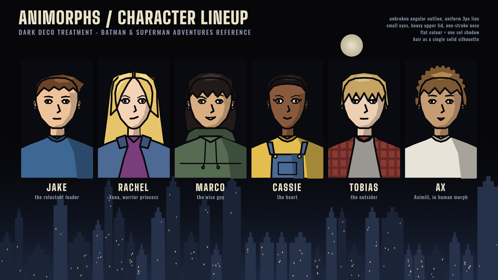
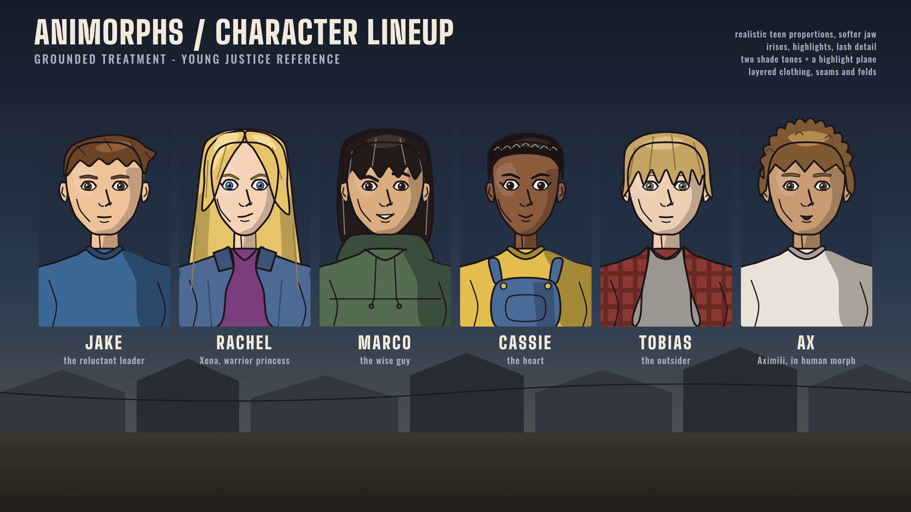
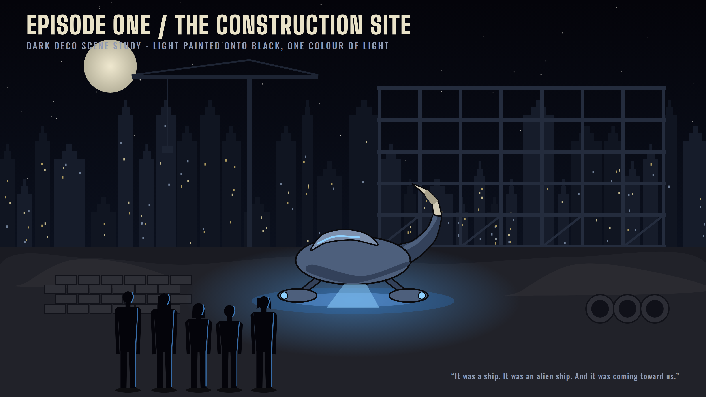
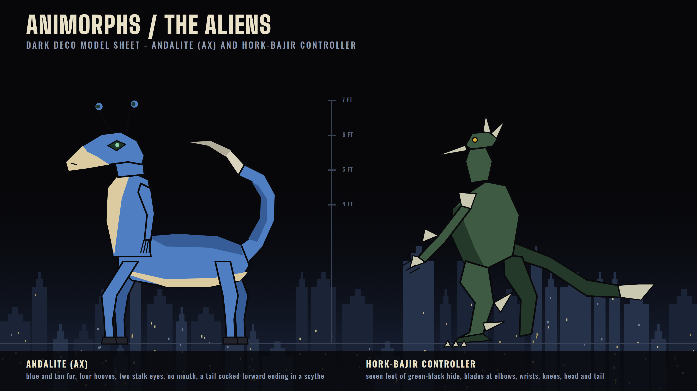
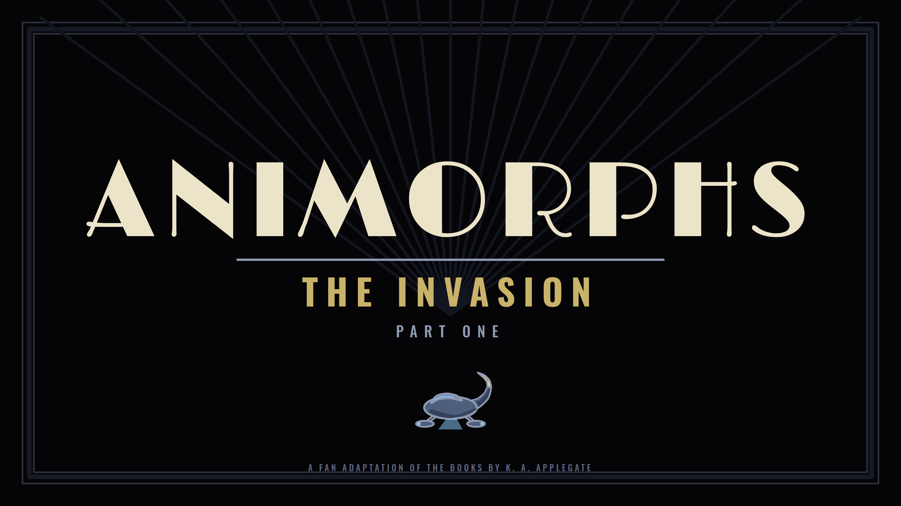

Fan adaptation · Look development · Round 2
The ask: drop the earlier cartoon styling and pitch the show at the Batman / Superman Adventures look or the Young Justice look. Both are drawn below with the same six kids so you can pick one and we move on to episode one.
Same characters, same crop, same lighting — only the drawing rules change

Unbroken angular outline at one weight, small eyes under a heavy lid, a one-stroke nose, hair as a single silhouette with one highlight, flat colour plus one cel shadow. Backgrounds are light painted onto black, the way Eric Radomski had the Gotham backgrounds done.

Realistic teen skulls with softer jaws, irises and eye highlights, lash detail, strand lines in the hair, two shade tones plus a highlight plane, and layered real-world clothing with seams and folds. Painted gradient sky over a believable suburban rooftop line.
Episode one scene study, alien model sheet, title card

The opening of The Invasion. One colour of light: Elfangor's fighter throws blue onto the dirt, the kids and the steel frame; everything else is painted dark-on-black. The fighter is designed to read as "an Andalite made into a ship" — egg hull, two pods, a cocked tail with a scythe.

Andalite and Hork-Bajir at true scale against a height bar. The Timm rules translate cleanly: angular planes, flat tan-and-blue, one shadow tone, blades as simple wedges.

The DCAU black-card convention: wordmark in a 1930s deco face, sunburst rules, episode title in gold. A cold open would cut to this card after the ship lands.
What the research says each style actually does on the page
| Dark Deco (Timm) | Grounded (Bourassa) | |
|---|---|---|
| Outline | Long unbroken lines, angular, one uniform weight (about 3 px at 1080p), pure black | Finer line (about 2 px), softer curves, dark brown rather than black |
| Head | Squared jaw on the men, pointed chin on the women, small features held to the centre of the face | Realistic teen skull, softer jaw, features spaced naturally |
| Eyes | Small whites, a black pupil dot, heavy straight upper lid | Almond shape, iris colour, pupil, one highlight, lash flick |
| Nose & mouth | One stroke each | Bridge and nostrils; lip line plus a lower-lip shadow |
| Hair | One solid silhouette with a few sharp points, one highlight shape | Silhouette plus strand lines, two tones |
| Shading | Flat colour plus one cel shadow | Shadow tone, highlight plane, cloth folds |
| Clothing | One garment in two or three colours | Layered outfits, seams, hardware |
| Backgrounds | Light painted onto black, deco geometry, one colour of light per scene | Painted gradients, believable suburban and interior detail |
| Proportions | Fairly realistic but exaggerated: heroic upper body, slim legs, held poses | Realistic, grounded; fantasy elements arrive sparingly for impact |
| Cost to animate | Lowest: fewest lines and colours per cel, easiest to keep consistent across a fan crew | Higher: more line and more tones per cel, but "as long as the mechanics are sound the animators can handle it" |
One call, and what we borrow from the other
Animorphs is ordinary thirteen-year-olds hiding a war in a suburb, and its horror is what the morphs do to bodies. Timm's discipline serves that: a flat, quiet human world makes the morph sequences and the aliens land harder, and the light-on-black night backgrounds give us the construction site, the Yeerk pool and the mall basement almost for free.
The uniform line and the small colour count are also what keep a fan production consistent across episodes and artists.
Reply in the chat with one of these and we start episode one
Research sources